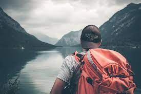

design idea and inspiration.
everything you need to know about travel and tourism.
5 best travel and tourism booking website
| TABLE OF CONTENTS | |
|---|---|
| TOP 45 ONLINE TRAVEL AND TOURISM BOOKING IDEAS | |
| 22 BEST ADVENTURE TRAVEL | |
| 8 BEST TRAVEL AND TOURISM PACKAGE | |
| BEST TRAVEL AND TOURISM PLANNING | |
In today’s world, almost everybody chooses to travel and tourism as their leisure. Traveling is a good way to learn about the world. Also, it teaches us many interesting things about the cultures of different nationalities. Read Speech on Travel and Tourism here.In addition, we also travel to meet our family or relatives that live in another city or country. Moreover, we also travel to find better jobs and opportunities. It is the best option for a person who wants to do some sightseeing or just wants to relax. Besides, our choices depend upon the weather, personality, and of course the money. Because a person who leads an active life will not go to the seaside for traveling. We also travel for pleasure on expeditions and for visiting tourist places. We can define tourism as traveling to various popular tourist and heritage locations in the state, country or anywhere in the world. It helps us to learn the history and cultural heritage of the place that is passed on to the people from generation to generation. It helps us to learn the heritage and culture of our own land too. We enjoy tourism because each place provides us with a unique experience and various different facilities. All the facilities like the hotel, conveyance, restaurants, and public transport, etc. need to be booked in advance. For making your trip more relaxing, all you have to do is book all these facilities well in advance. It costs a lot but is worth every penny you spend on it as it relaxes the mind, body, and soul. Also, we learn a lot about different cultures, practical issues, and interacting with people of multiple backgrounds and manners. In India, tourism is not convenient and as easy as that in developed countries. Moreover, there are many limitations that the ministry of tourism should correct so that the tourism industry can bloom and make profits for the economy.